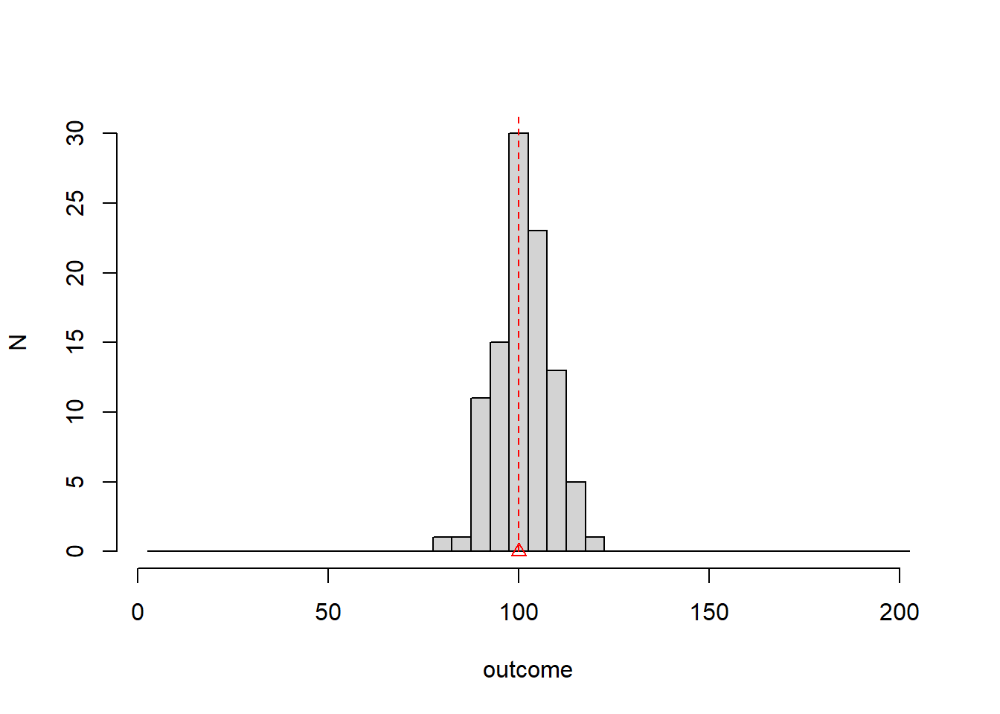

Chapter 2 Descripción de datos
2.2 Estadísticas
Resolver problemas de manera sistemática (ciencia, tecnología e ingeniería)
¡Los humanos modernos usamos un método general históricamente desarrollado durante miles de años! … y aún en desarrollo.
Tiene tres componentes principales: observación, lógica y generación de nuevo conocimiento.

2.4 Resultado
Observación o Realización
- Una observación es la adquisición de un número o una característica de un experimento
… 1 0 0 1 0 1 0 1 1 … (el número en negrita es una observación en una repetición del experimento)
Resultado
- Un resultado es una de las posibles observaciones de un experimento.
1 es un resultado, 0 es el otro resultado
2.5 Tipos de resultado
- Categórico: Si el resultado de un experimento solo puede tomar valores discretos (número de piezas de automóvil producidas por hora, número de leucocitos en sangre)
- Continuo: Si el resultado de un experimento solo puede tomar valores continuos (estado de carga de la batería, temperatura del motor).
2.6 Experimentos aleatorios
Definición:
Un experimento aleatorio es un experimento que da diferentes resultados cuando se repite de la misma manera.
Ejemplos:
- en el mismo objeto (persona): temperatura, niveles de azúcar.
- sobre objetos diferentes pero de la misma medida: el peso de un animal.
- sobre eventos: número de correos electrónicos recibidos en una hora.
2.7 Frecuencias absolutas
Cuando repetimos un experimento aleatorio, registramos una lista de resultados.
Resumimos las observaciones categóricas contando cuántas veces vimos un resultado en particular.
Frecuencia absoluta:
\[n_i\]
es el número de veces que observamos el resultado \(i\)
2.8 Ejemplo
Experimento aleatorio: extraiga un leucocito de un donante y anote su tipo. Repita el experimento \(N=119\) veces.
(célula T, célula T, neutrófilo, ..., célula B)## outcome ni
## 1 T Cell 34
## 2 B cell 50
## 3 basophil 20
## 4 Monocyte 5
## 5 Neutrophil 10- Por ejemplo: \(n_1=34\) es el número total de células T
- \(N=\sum_i n_i=119\)
2.9 Frecuencias relativas
También podemos resumir las observaciones calculando la proporción de cuántas veces vimos un resultado en particular.
\[f_i=n_i/N\] donde \(N\) es el número total de observaciones
En nuestro ejemplo se registran \(n_1=34\) células T, por lo que la frecuencia relativa nos da la proporción de células T de un total de \(119\).
2.10 Ejemplo
## outcome ni fi
## 1 T Cell 34 0.28571429
## 2 B cell 50 0.42016807
## 3 basophil 20 0.16806723
## 4 Monocyte 5 0.04201681
## 5 Neutrophil 10 0.08403361Tenemos
\(\sum_{i=1..M} n_i = N\)
\(\sum_{i=1..M} f_i = 1\)
donde \(M\) es el número de resultados.

2.12 Gráfico de sectores
Podemos visualizar las frecuencias relativas con un gráfico de sectores
- Donde el área del círculo representa el 100% de las observaciones (proporción = 1) y las secciones las frecuencias relativas de todos los resultados.

2.13 Variables categóricas y ordenadas
Los tipos de células no están ordenados de manera lógica en relación con los resultados. Sin embargo, a veces las variables categóricas se pueden ordenar.
Estudio de misofonía:
123 pacientes fueron examinados por misofonía: ansiedad/ira producida por ciertos sonidos
Se clasificaron en 4 grupos diferentes según la gravedad.
2.14 Ejemplo
Los resultados del estudio son:
## [1] 4 2 0 3 0 0 2 3 0 3 0 2 2 0 2 0 0 3 3 0 3 3 2 0 0 0 4 2 2 0 2 0 0 0 3 0 2
## [38] 3 2 2 0 2 3 0 0 2 2 3 3 0 0 4 3 3 2 0 2 0 0 0 2 2 0 0 2 3 0 1 3 2 4 3 2 3
## [75] 0 2 3 2 4 1 2 0 2 0 2 0 2 2 4 3 0 3 0 0 0 2 2 1 3 0 0 3 2 1 3 0 4 4 2 3 3
## [112] 3 0 3 2 1 2 3 3 4 2 3 2y su tabla de frecuencias
## outcome ni fi
## 1 0 41 0.33333333
## 2 1 5 0.04065041
## 3 2 37 0.30081301
## 4 3 31 0.25203252
## 5 4 9 0.073170732.15 Frecuencias acumuladas absolutas y relativas
La gravedad de la misofonía es categórica y ordenada.
Cuando los resultados se pueden ordenar, entonces es útil preguntarse por el número de observaciones que se obtuvieron hasta un resultado dado. Llamamos a este número la frecuencia acumulada absoluta hasta el resultado \(i\): \[N_i=\sum_{k=1..i} n_k\]
Tambíen es útil calcular la proporción de las observaciones que se obtuvo hasta un resultado dado
\[F_i=\sum_{k=1..i} f_k\]
2.16 Tabla de frecuencia
## outcome ni fi Ni Fi
## 0 0 41 0.33333333 41 0.3333333
## 1 1 5 0.04065041 46 0.3739837
## 2 2 37 0.30081301 83 0.6747967
## 3 3 31 0.25203252 114 0.9268293
## 4 4 9 0.07317073 123 1.000000067% de los pacientes tenían misofonía hasta la gravedad 2
37% de los pacientes tienen una gravedad menor o igual a 1
2.17 Gráfica de frecuencia acumulada
También podemos graficar la frecuencia acumulada Vs los resultados
 ___________
___________
___________
___________
2.18 Variables continuas
El resultado de un experimento aleatorio también puede dar resultados continuos.
En el estudio de misofonía, los investigadores se preguntaron si la convexidad de la mandíbula afectaría la gravedad de la misofonía (la hipótesis científica es que el ángulo de convexidad de la mandíbula puede influir en el oído y su sensibilidad). Estos son los resultados para la convexidad de la mandíbula (grados)
## [1] 7.97 18.23 12.27 7.81 9.81 13.50 19.30 7.70 12.30 7.90 12.60 19.00
## [13] 7.27 14.00 5.40 8.00 11.20 7.75 7.94 16.69 7.62 7.02 7.00 19.20
## [25] 7.96 14.70 7.24 7.80 7.90 4.70 4.40 14.00 14.40 16.00 1.40 9.76
## [37] 7.90 7.90 7.40 6.30 7.76 7.30 7.00 11.23 16.00 7.90 7.29 6.91
## [49] 7.10 13.40 11.60 -1.00 6.00 7.82 4.80 11.00 9.00 11.50 16.00 15.00
## [61] 1.40 16.80 7.70 16.14 7.12 -1.00 17.00 9.26 18.70 3.40 21.30 7.50
## [73] 6.03 7.50 19.00 19.01 8.10 7.80 6.10 15.26 7.95 18.00 4.60 15.00
## [85] 7.50 8.00 16.80 8.54 7.00 18.30 7.80 16.00 14.00 12.30 11.40 8.50
## [97] 7.00 7.96 17.60 10.00 3.50 6.70 17.00 20.26 6.64 1.80 7.02 2.46
## [109] 19.00 17.86 6.10 6.64 12.00 6.60 8.70 14.05 7.20 19.70 7.70 6.02
## [121] 2.50 19.00 6.802.19 Contenedores
¡Los resultados continuos no se pueden contar!
Las transformamos en variables categóricas ordenadas
- Cubrimos el rango de las observaciones en intervalos regulares del mismo tamaño (bins)
## [1] "[-1.02,3.46]" "(3.46,7.92]" "(7.92,12.4]" "(12.4,16.8]" "(16.8,21.3]"2.20 Crear una variable categórica a partir de una continua
- Asignamos cada observación a su intervalo: creando una variable categórica ordenada; en este caso con 5 resultados posibles
## [1] "(7.92,12.4]" "(16.8,21.3]" "(7.92,12.4]" "(3.46,7.92]" "(7.92,12.4]"
## [6] "(12.4,16.8]" "(16.8,21.3]" "(3.46,7.92]" "(7.92,12.4]" "(3.46,7.92]"
## [11] "(12.4,16.8]" "(16.8,21.3]" "(3.46,7.92]" "(12.4,16.8]" "(3.46,7.92]"
## [16] "(7.92,12.4]" "(7.92,12.4]" "(3.46,7.92]" "(7.92,12.4]" "(12.4,16.8]"
## [21] "(3.46,7.92]" "(3.46,7.92]" "(3.46,7.92]" "(16.8,21.3]" "(7.92,12.4]"
## [26] "(12.4,16.8]" "(3.46,7.92]" "(3.46,7.92]" "(3.46,7.92]" "(3.46,7.92]"
## [31] "(3.46,7.92]" "(12.4,16.8]" "(12.4,16.8]" "(12.4,16.8]" "[-1.02,3.46]"
## [36] "(7.92,12.4]" "(3.46,7.92]" "(3.46,7.92]" "(3.46,7.92]" "(3.46,7.92]"
## [41] "(3.46,7.92]" "(3.46,7.92]" "(3.46,7.92]" "(7.92,12.4]" "(12.4,16.8]"
## [46] "(3.46,7.92]" "(3.46,7.92]" "(3.46,7.92]" "(3.46,7.92]" "(12.4,16.8]"
## [51] "(7.92,12.4]" "[-1.02,3.46]" "(3.46,7.92]" "(3.46,7.92]" "(3.46,7.92]"
## [56] "(7.92,12.4]" "(7.92,12.4]" "(7.92,12.4]" "(12.4,16.8]" "(12.4,16.8]"
## [61] "[-1.02,3.46]" "(12.4,16.8]" "(3.46,7.92]" "(12.4,16.8]" "(3.46,7.92]"
## [66] "[-1.02,3.46]" "(16.8,21.3]" "(7.92,12.4]" "(16.8,21.3]" "[-1.02,3.46]"
## [71] "(16.8,21.3]" "(3.46,7.92]" "(3.46,7.92]" "(3.46,7.92]" "(16.8,21.3]"
## [76] "(16.8,21.3]" "(7.92,12.4]" "(3.46,7.92]" "(3.46,7.92]" "(12.4,16.8]"
## [81] "(7.92,12.4]" "(16.8,21.3]" "(3.46,7.92]" "(12.4,16.8]" "(3.46,7.92]"
## [86] "(7.92,12.4]" "(12.4,16.8]" "(7.92,12.4]" "(3.46,7.92]" "(16.8,21.3]"
## [91] "(3.46,7.92]" "(12.4,16.8]" "(12.4,16.8]" "(7.92,12.4]" "(7.92,12.4]"
## [96] "(7.92,12.4]" "(3.46,7.92]" "(7.92,12.4]" "(16.8,21.3]" "(7.92,12.4]"
## [101] "(3.46,7.92]" "(3.46,7.92]" "(16.8,21.3]" "(16.8,21.3]" "(3.46,7.92]"
## [106] "[-1.02,3.46]" "(3.46,7.92]" "[-1.02,3.46]" "(16.8,21.3]" "(16.8,21.3]"
## [111] "(3.46,7.92]" "(3.46,7.92]" "(7.92,12.4]" "(3.46,7.92]" "(7.92,12.4]"
## [116] "(12.4,16.8]" "(3.46,7.92]" "(16.8,21.3]" "(3.46,7.92]" "(3.46,7.92]"
## [121] "[-1.02,3.46]" "(16.8,21.3]" "(3.46,7.92]"2.21 Tabla de frecuencias para una variable continua
## outcome ni fi Ni Fi
## 1 [-1.02,3.46] 8 0.06504065 8 0.06504065
## 2 (3.46,7.92] 51 0.41463415 59 0.47967480
## 3 (7.92,12.4] 26 0.21138211 85 0.69105691
## 4 (12.4,16.8] 20 0.16260163 105 0.85365854
## 5 (16.8,21.3] 18 0.14634146 123 1.000000002.22 Histograma
El histograma es la gráfica de \(n_i\) o \(f_i\) Vs los resultados (bins). El histograma depende del tamaño de los contenedores.

2.24 Histograma
El histograma es la gráfica de \(n_i\) o \(f_i\) Vs los resultados (bins). El histograma depende del tamaño de los contenedores.

2.25 Gráfica de frecuencia acumulada: Variables continuas
También podemos graficar la frecuencia acumulada Vs los resultados

2.26 Resumen estadístico
Las estadísticas de resumen son números calculados a partir de los datos que nos dicen características importantes de las variables numéricas (categóricas o continuas).
Valores límite:
- mínimo: el resultado mínimo observado
- máximo: el resultado máximo observado
Valor central para los resultados
- El promedio se define como
\[\bar{x}=\frac{1}{N} \sum_{j=1..N} x_j\]
donde \(x_j\) es la observación \(j\) (convexidad) de un total de \(N\).
2.27 Promedio
La convexidad promedio se puede calcular directamente a partir de las observaciones
\(\bar{x}= \frac{1}{N}\sum_j x_j\)
\(= \frac{1}{N}(7.97 + 18.23 + 12.27... + 6.80) = 10.19894\)
2.28 Promedio (ordenado categóricamente)
Para las variables ordenadas categóricamente, podemos usar la tabla de frecuencias para calcular el promedio
## outcome ni fi
## 1 0 41 0.33333333
## 2 1 5 0.04065041
## 3 2 37 0.30081301
## 4 3 31 0.25203252
## 5 4 9 0.07317073La severidad promedio de la misofonía en el estudio también puede calcularse a partir de las frecuencias relativas de los resultados
\(\bar{x}=\frac{1}{N}\sum_{i=1...N} x_j=\frac{1}{N}\sum_{i=1...M} x_i*n_ {i}=\sum_{i=1...M} x_i*f_{i}\)
\(=0*f_{0}+1*f_{1}+2*f_{2}+3*f_{3}+4*f_{4}=1,691057\)
(note el cambio de \(N\) a \(M\) en la segunda suma)
2.29 Promedio (ordenado categóricamente)
En términos de los resultados de las variables ordenadas categóricas, el promedio se puede escribir como
\[\bar{x}= \sum_{i = 1...M} x_i f_i\]
de un total de \(M\) posibles resultados (número de niveles de gravedad).
\(\bar{x}\) es el valor central o centro de gravedad de los resultados. Como si cada resultado tuviera una densidad de masa dada por \(f_i\).
2.30 Promedio
El promedio no es el resultado de una observación (experimento aleatorio).
Es el resultado de una serie de observaciones (muestra).
Describe el número donde se equilibran los valores observados.
Por eso escuchamos, por ejemplo, que un paciente con una infección puede contagiar a una media de 2,5 personas.

2.32 mediana
Otra medida de centralidad es la mediana. La mediana \(q_{0.5}\) es el valor \(x_p\)
\[mediana(x)=q_{0.5}=x_p\]
debajo del cual encontramos la mitad de las observaciones
\[\sum_{x\leq x_p} 1 = \frac{N}{2}\]
o en términos de frecuencias, es el valor \(x_p\) que hace que la frecuencia acumulada \(F_p\) sea igual a \(0.5\)
\[q_{0.5}=\sum_{x\leq x_p} f_x =F_p=0.5\]
2.33 Mediana Vs Promedio
- Promedio: Centro de masa (compensa valores distantes)
- Mediana: La mitad de la masa

2.34 Dispersión
Una medida importante de los resultados es su dispersión. Muchos experimentos pueden compartir su media, pero difieren en la dispersión de los valores.


2.36 Variación de la muestra
La dispersión con respecto a la media se mide con el
- La varianza muestral:
\[s^2=\frac{1}{N-1} \sum_{j=1..N} (x_j-\bar{x})^2\]
Mide la distancia cuadrada promedio de las observaciones al promedio. La razón de \(N-1\) se explicará cuando hablemos de inferencia.
2.37 Variación de la muestra
- En términos de frecuencias de variables categóricas y ordenadas
\[s^2=\frac{N}{N-1} \sum_{x} (x-\bar{x})^2 f_x\]
\(s^2\) se puede considerar como el momento de inercia de las observaciones.
2.38 Desviación Estándar
La raíz cuadrada de la varianza de la muestra se denomina desviación estándar \(s\).
La desviación estándar del ángulo de convexidad es
\(s= [\frac{1}{123-1}((7,97-10,19894)^2+ (18,23-10,19894)^2\) \(+ (12,27-10,19894)^2 + ...)]^{1/2} = 5,086707\)
La convexidad de la mandíbula se desvía de su media en \(5,086707\).
2.39 RIC
La dispersión de datos también se puede medir con respecto a la mediana por el rango intercuartílico
Definimos el primer cuartil como el valor \(x_p\) que hace que la frecuencia acumulada \(F_p\) sea igual a \(0,25\)
\[q_{0.25}=\sum_{x\leq x_p} f_x =F_p=0.25\]
- También definimos el tercer cuartil como el valor \(x_p\) que hace que la frecuencia acumulada \(F_p\) sea igual a \(0,75\)
\[q_{0.75}=\sum_{x\leq x_p} f_x =F_p=0.75\]